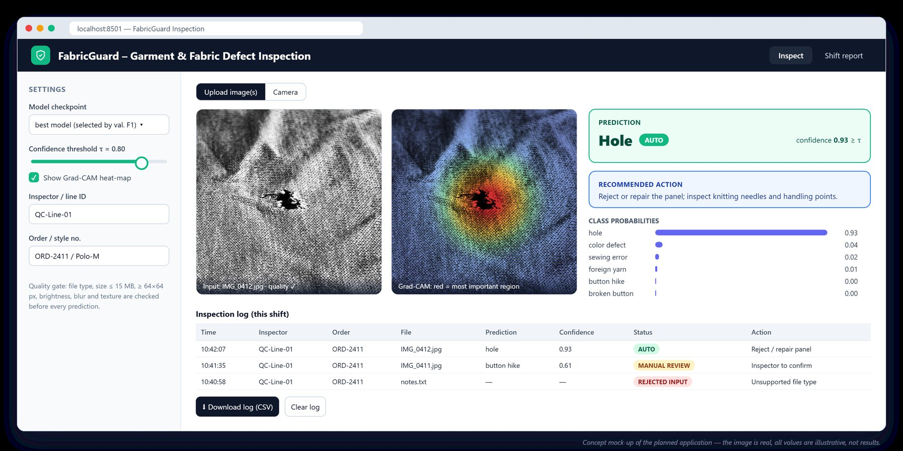

Catch garment defects before the buyer does.
FabricGuard looks at a photo of a garment, tells the inspector what's wrong with it and shows exactly where it looked.

Try it on your own photo
Runs in your browser. Your photo is not uploaded anywhere.
Loading the model…
The model only knows the six defect types below and has no "no defect" class. A photo without a defect, or something that isn't a garment, still gets one of the six labels, usually with low confidence, and is sent to manual review.
Three steps at the inspection table
Take a photo
Use a phone or a fixed camera. Dark or blurry shots are flagged right away.
Get the defect type
The model names the defect and highlights the area it based that on.
Confirm and move on
Unsure cases go to the inspector. Everything is saved to the shift log.
Six defects it knows
Trained on 2,443 real garment photos.
86% macro-F1 on unseen photos
We tested four models on images the models never saw during training. A fine-tuned EfficientNet-B0 came out on top.
Read the reportTeam
Supervised by Md. Shahriar Shakil, Lecturer (Senior Scale), Dept. of CSE.